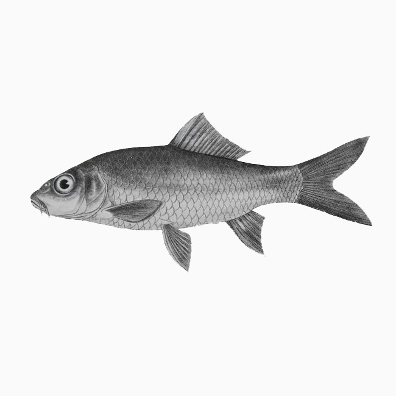
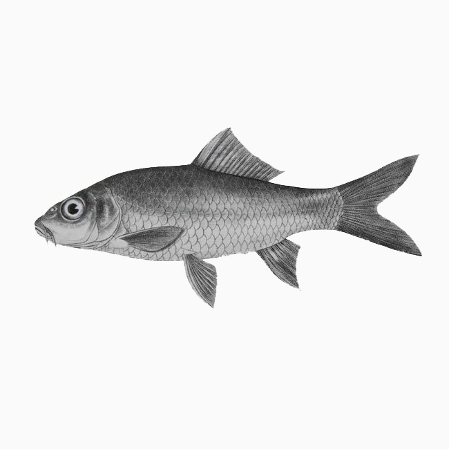

中国动物的主要威胁来自人类活动 ，自然灾害的影响几乎可忽略不计。如在威胁哺乳动物的所有因素中，排在前三位的是人类过度利用（32%）、 生境丧失（25%）、人类干扰（20%），至于自然灾害、火灾、物种入侵等因素所占比例都在 4% 以下。
 


“濒危动物，即有灭绝危险的野生动物物种。每种动物的灭绝都可能导致当地生态系统的崩解”
“濒危动物，即有灭绝危险的野生动物物种。每种动物的灭绝都可能导致当地生态系统的崩解”

“关于动物保护的最新资讯”
查看更多 →“关于动物保护的最新资讯”
“一同成为保护濒危动物的lifeline（救生索）”
“一同成为保护濒危动物的lifeline（救生索）”
“你的建议将会成为我们进步的动力”
“你的建议将会成为我们进步的动力”